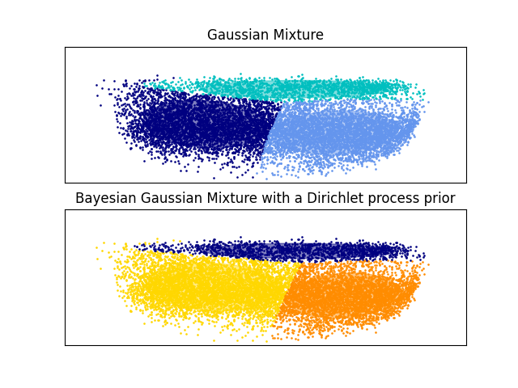

Note
Click here to download the full example code
Auto-encoder w/ GMM clustering¶
Out:
Using cpu
╒═════════════════════════════╤════════╤═════════════════════╤═════════════════════╤═════════════════════╤══════════════════╕
│ │ │ Overall │ 0 │ 1 │ 2 │
╞═════════════════════════════╪════════╪═════════════════════╪═════════════════════╪═════════════════════╪══════════════════╡
│ n │ │ 10286 │ 4932 │ 3923 │ 1431 │
├─────────────────────────────┼────────┼─────────────────────┼─────────────────────┼─────────────────────┼──────────────────┤
│ abdominal_pain, n (%) │ False │ 7197 (70.0) │ 3837 (77.8) │ 3234 (82.4) │ 126 (8.8) │
├─────────────────────────────┼────────┼─────────────────────┼─────────────────────┼─────────────────────┼──────────────────┤
│ │ True │ 3089 (30.0) │ 1095 (22.2) │ 689 (17.6) │ 1305 (91.2) │
├─────────────────────────────┼────────┼─────────────────────┼─────────────────────┼─────────────────────┼──────────────────┤
│ ascites, n (%) │ False │ 8926 (86.8) │ 4005 (81.2) │ 3636 (92.7) │ 1285 (89.8) │
├─────────────────────────────┼────────┼─────────────────────┼─────────────────────┼─────────────────────┼──────────────────┤
│ │ True │ 1360 (13.2) │ 927 (18.8) │ 287 (7.3) │ 146 (10.2) │
├─────────────────────────────┼────────┼─────────────────────┼─────────────────────┼─────────────────────┼──────────────────┤
│ bleeding, n (%) │ False │ 1896 (18.4) │ 1310 (26.6) │ 241 (6.1) │ 345 (24.1) │
├─────────────────────────────┼────────┼─────────────────────┼─────────────────────┼─────────────────────┼──────────────────┤
│ │ True │ 8390 (81.6) │ 3622 (73.4) │ 3682 (93.9) │ 1086 (75.9) │
├─────────────────────────────┼────────┼─────────────────────┼─────────────────────┼─────────────────────┼──────────────────┤
│ bleeding_gum, n (%) │ False │ 9045 (87.9) │ 4223 (85.6) │ 3428 (87.4) │ 1394 (97.4) │
├─────────────────────────────┼────────┼─────────────────────┼─────────────────────┼─────────────────────┼──────────────────┤
│ │ True │ 1241 (12.1) │ 709 (14.4) │ 495 (12.6) │ 37 (2.6) │
├─────────────────────────────┼────────┼─────────────────────┼─────────────────────┼─────────────────────┼──────────────────┤
│ bleeding_mucosal, n (%) │ False │ 8489 (82.5) │ 4488 (91.0) │ 3789 (96.6) │ 212 (14.8) │
├─────────────────────────────┼────────┼─────────────────────┼─────────────────────┼─────────────────────┼──────────────────┤
│ │ True │ 1797 (17.5) │ 444 (9.0) │ 134 (3.4) │ 1219 (85.2) │
├─────────────────────────────┼────────┼─────────────────────┼─────────────────────┼─────────────────────┼──────────────────┤
│ bleeding_skin, n (%) │ False │ 6233 (60.6) │ 2752 (55.8) │ 3418 (87.1) │ 63 (4.4) │
├─────────────────────────────┼────────┼─────────────────────┼─────────────────────┼─────────────────────┼──────────────────┤
│ │ True │ 4053 (39.4) │ 2180 (44.2) │ 505 (12.9) │ 1368 (95.6) │
├─────────────────────────────┼────────┼─────────────────────┼─────────────────────┼─────────────────────┼──────────────────┤
│ dsource, n (%) │ 01nva │ 39 (0.4) │ 10 (0.2) │ │ 29 (2.0) │
├─────────────────────────────┼────────┼─────────────────────┼─────────────────────┼─────────────────────┼──────────────────┤
│ │ 06dx │ 168 (1.6) │ 102 (2.1) │ 8 (0.2) │ 58 (4.1) │
├─────────────────────────────┼────────┼─────────────────────┼─────────────────────┼─────────────────────┼──────────────────┤
│ │ 13dx │ 6462 (62.8) │ 2869 (58.2) │ 3571 (91.0) │ 22 (1.5) │
├─────────────────────────────┼────────┼─────────────────────┼─────────────────────┼─────────────────────┼──────────────────┤
│ │ 32dx │ 9 (0.1) │ 6 (0.1) │ 2 (0.1) │ 1 (0.1) │
├─────────────────────────────┼────────┼─────────────────────┼─────────────────────┼─────────────────────┼──────────────────┤
│ │ 42dx │ 11 (0.1) │ 10 (0.2) │ │ 1 (0.1) │
├─────────────────────────────┼────────┼─────────────────────┼─────────────────────┼─────────────────────┼──────────────────┤
│ │ df │ 1304 (12.7) │ 124 (2.5) │ 48 (1.2) │ 1132 (79.1) │
├─────────────────────────────┼────────┼─────────────────────┼─────────────────────┼─────────────────────┼──────────────────┤
│ │ dr │ 1219 (11.9) │ 888 (18.0) │ 229 (5.8) │ 102 (7.1) │
├─────────────────────────────┼────────┼─────────────────────┼─────────────────────┼─────────────────────┼──────────────────┤
│ │ fl │ 147 (1.4) │ 116 (2.4) │ │ 31 (2.2) │
├─────────────────────────────┼────────┼─────────────────────┼─────────────────────┼─────────────────────┼──────────────────┤
│ │ md │ 927 (9.0) │ 807 (16.4) │ 65 (1.7) │ 55 (3.8) │
├─────────────────────────────┼────────┼─────────────────────┼─────────────────────┼─────────────────────┼──────────────────┤
│ gender, n (%) │ Female │ 4518 (43.9) │ 2012 (40.8) │ 1831 (46.7) │ 675 (47.2) │
├─────────────────────────────┼────────┼─────────────────────┼─────────────────────┼─────────────────────┼──────────────────┤
│ │ Male │ 5768 (56.1) │ 2920 (59.2) │ 2092 (53.3) │ 756 (52.8) │
├─────────────────────────────┼────────┼─────────────────────┼─────────────────────┼─────────────────────┼──────────────────┤
│ shock, n (%) │ False │ 9826 (95.5) │ 4764 (96.6) │ 3887 (99.1) │ 1175 (82.1) │
├─────────────────────────────┼────────┼─────────────────────┼─────────────────────┼─────────────────────┼──────────────────┤
│ │ True │ 460 (4.5) │ 168 (3.4) │ 36 (0.9) │ 256 (17.9) │
├─────────────────────────────┼────────┼─────────────────────┼─────────────────────┼─────────────────────┼──────────────────┤
│ age, median [Q1,Q3] │ │ 8.0 [5.0,11.0] │ 10.0 [8.0,12.0] │ 4.0 [2.0,5.0] │ 10.0 [7.0,12.0] │
├─────────────────────────────┼────────┼─────────────────────┼─────────────────────┼─────────────────────┼──────────────────┤
│ temperature, median [Q1,Q3] │ │ 37.5 [37.2,38.0] │ 37.7 [37.3,38.5] │ 37.4 [37.2,37.8] │ 37.0 [37.0,37.5] │
├─────────────────────────────┼────────┼─────────────────────┼─────────────────────┼─────────────────────┼──────────────────┤
│ hct, median [Q1,Q3] │ │ 39.1 [36.5,42.8] │ 39.7 [37.5,42.4] │ 36.9 [34.8,38.9] │ 49.0 [46.0,52.0] │
├─────────────────────────────┼────────┼─────────────────────┼─────────────────────┼─────────────────────┼──────────────────┤
│ plt, median [Q1,Q3] │ │ 195.0 [115.0,255.0] │ 198.0 [135.0,253.0] │ 225.0 [178.0,278.0] │ 37.9 [25.6,52.5] │
├─────────────────────────────┼────────┼─────────────────────┼─────────────────────┼─────────────────────┼──────────────────┤
│ weight, median [Q1,Q3] │ │ 25.0 [18.0,35.0] │ 34.0 [26.6,42.0] │ 16.5 [13.0,20.0] │ 28.0 [21.0,36.0] │
╘═════════════════════════════╧════════╧═════════════════════╧═════════════════════╧═════════════════════╧══════════════════╛
7 8 9 10 11 12 13 14 15 16 17 18 19 20 21 22 23 24 25 26 27 28 29 30 31 32 33 34 35 36 37 38 39 40 41 42 43 44 45 46 47 48 49 50 51 52 53 54 55 56 57 58 59 60 61 62 63 64 65 66 67 68 69 70 71 72 73 74 75 76 77 78 79 80 81 82 83 84 85 86 87 88 89 90 91 92 93 94 95 96 97 98 99 100 101 102 103 104 105 106 107 108 109 110 111 112 113 114 115 116 117 118 119 120 121 122 123 124 125 126 127 128 129 130 131 132 133 134 135 136 137 138 139 140 141 142 143 144 145 146 147 148 149 150 151 152 153 154 155 156 157 158 159 160 161 162 163 164 165 166 167 168 169 170 171 172 173 | import os
import pandas as pd
import numpy as np
import pickle
from torch.utils.data import DataLoader
from sklearn.model_selection import train_test_split
from sklearn import preprocessing
from pkgname.core.AE.autoencoder import get_device, set_seed
from pkgname.utils.data_loader import load_dengue, IQR_rule
from definitions import ROOT_DIR
from tableone import TableOne
import matplotlib.pyplot as plt
import itertools
from scipy import linalg
import matplotlib as mpl
from sklearn import mixture
# --------------
# Load data
# --------------
SEED = 0
batch_size = 16
MODEL_PATH = os.path.join(ROOT_DIR, 'examples', 'autoencoder', 'sigmoid')
N_CLUSTERS = 3
# Set seed
set_seed(SEED)
# Get device
device = get_device(False)
features = ["dsource", "date", "age", "gender", "weight", "bleeding", "plt",
"shock", "haematocrit_percent", "bleeding_gum", "abdominal_pain",
"ascites", "bleeding_mucosal", "bleeding_skin", "body_temperature"]
info_feat = ["dsource", "shock", "bleeding", "bleeding_gum", "abdominal_pain", "ascites",
"bleeding_mucosal", "bleeding_skin", "gender"]
data_feat = ["age", "weight", "plt", "haematocrit_percent", "body_temperature"]
before_fill = load_dengue(usecols=['study_no'] + features)
before_fill = before_fill.loc[before_fill['age'] <= 18]
before_fill = IQR_rule(before_fill, ['plt', 'haematocrit_percent', 'body_temperature'])
df = before_fill.copy()
before_fill = before_fill.dropna(subset=data_feat + ['date'])
for feat in features:
df[feat] = before_fill.groupby('study_no')[feat].ffill().bfill()
df = df.dropna()
df = df.groupby(by="study_no", dropna=False).agg(
dsource=pd.NamedAgg(column="dsource", aggfunc="last"),
date=pd.NamedAgg(column="date", aggfunc="last"),
age=pd.NamedAgg(column="age", aggfunc="max"),
gender=pd.NamedAgg(column="gender", aggfunc="first"),
weight=pd.NamedAgg(column="weight", aggfunc=np.mean),
bleeding=pd.NamedAgg(column="bleeding", aggfunc="max"),
plt=pd.NamedAgg(column="plt", aggfunc="min"),
shock=pd.NamedAgg(column="shock", aggfunc="max"),
haematocrit_percent=pd.NamedAgg(column="haematocrit_percent", aggfunc="max"),
bleeding_gum=pd.NamedAgg(column="bleeding_gum", aggfunc="max"),
abdominal_pain=pd.NamedAgg(column="abdominal_pain", aggfunc="max"),
ascites=pd.NamedAgg(column="ascites", aggfunc="max"),
bleeding_mucosal=pd.NamedAgg(column="bleeding_mucosal", aggfunc="max"),
bleeding_skin=pd.NamedAgg(column="bleeding_skin", aggfunc="max"),
body_temperature=pd.NamedAgg(column="body_temperature", aggfunc=np.mean),
).dropna()
mapping = {'Female': 0, 'Male': 1}
df = df.replace({'gender': mapping})
train, test = train_test_split(df, test_size=0.2, random_state=SEED)
train_data = train[data_feat]
test_data = test[data_feat]
train_info = train[info_feat]
test_info = test[info_feat]
scaler = preprocessing.MinMaxScaler().fit(train_data)
train_scaled = scaler.transform(train_data.to_numpy())
test_scaled = scaler.transform(test_data.to_numpy())
loader_train = DataLoader(train_scaled, batch_size, shuffle=False)
loader_test = DataLoader(test_scaled, batch_size, shuffle=False)
model = pickle.load(open(MODEL_PATH, 'rb'))
encoded_train = model.encode_inputs(loader_train)
plt.scatter(encoded_train[:, 0], encoded_train[:, 1], c=train_info['shock'])
plt.title('AE shock in latent space (testing data)')
plt.show()
color_iter = itertools.cycle(['navy', 'c', 'cornflowerblue', 'gold',
'darkorange'])
def plot_results(X, Y_, means, covariances, index, title):
splot = plt.subplot(2, 1, 1 + index)
for i, (mean, covar, color) in enumerate(zip(
means, covariances, color_iter)):
v, w = linalg.eigh(covar)
v = 2. * np.sqrt(2.) * np.sqrt(v)
u = w[0] / linalg.norm(w[0])
# as the DP will not use every component it has access to
# unless it needs it, we shouldn't plot the redundant
# components.
if not np.any(Y_ == i):
continue
plt.scatter(X[Y_ == i, 0], X[Y_ == i, 1], .8, color=color)
# Plot an ellipse to show the Gaussian component
angle = np.arctan(u[1] / u[0])
angle = 180. * angle / np.pi # convert to degrees
ell = mpl.patches.Ellipse(mean, v[0], v[1], 180. + angle, color=color)
ell.set_clip_box(splot.bbox)
ell.set_alpha(0.5)
splot.add_artist(ell)
plt.xlim(0, 1.)
plt.ylim(0, 1)
plt.xticks(())
plt.yticks(())
plt.title(title)
# Fit a Gaussian mixture with EM using five components
gmm = mixture.GaussianMixture(n_components=N_CLUSTERS, covariance_type='full').fit(encoded_train)
plot_results(encoded_train, gmm.predict(encoded_train), gmm.means_, gmm.covariances_, 0,
'Gaussian Mixture')
# Fit a Dirichlet process Gaussian mixture using five components
dpgmm = mixture.BayesianGaussianMixture(n_components=N_CLUSTERS,
covariance_type='full').fit(encoded_train)
plot_results(encoded_train, dpgmm.predict(encoded_train), dpgmm.means_, dpgmm.covariances_, 1,
'Bayesian Gaussian Mixture with a Dirichlet process prior')
plt.show()
# Table
labels = [f"Cluster {i}" for i in range(N_CLUSTERS)]
mapping = {0: 'Female', 1: 'Male'}
table_df = train.replace({'gender': mapping})
table_df['cluster'] = dpgmm.predict(encoded_train)
columns = info_feat+data_feat
nonnormal = list(table_df[columns].select_dtypes(include='number').columns)
categorical = list(set(columns).difference(set(nonnormal)))
columns = sorted(categorical) + sorted(nonnormal)
rename = {'haematocrit_percent': 'hct',
'body_temperature': 'temperature'}
table = TableOne(table_df, columns=columns, categorical=categorical, nonnormal=nonnormal,
groupby='cluster', rename=rename, missing=False)
print(table.tabulate(tablefmt="fancy_grid"))
|
Total running time of the script: ( 0 minutes 8.189 seconds)